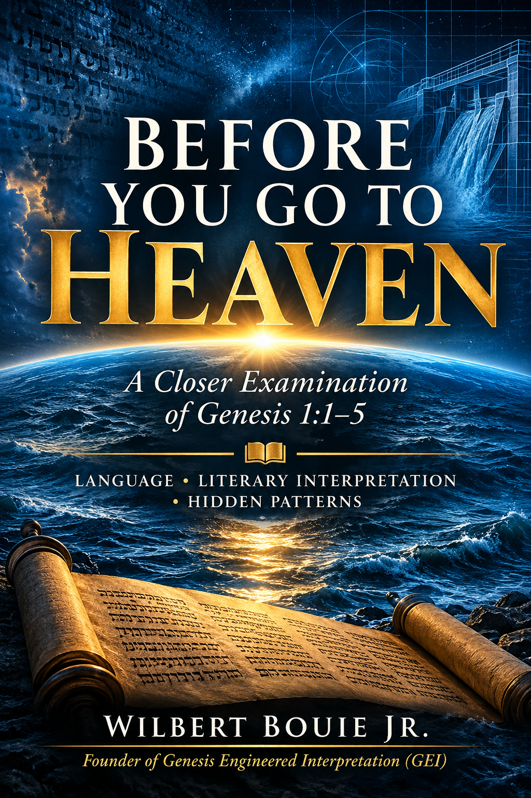

Before You Go to Heaven
This book is a careful, provocative examination of Genesis 1:1–5—the opening sequence of creation, the first day. The title is deliberately provocative: Genesis 1:8 introduces the naming of the firmament as Heaven on the second day. This volume concentrates on the first day’s opening sequence and asks what assumptions readers bring to the threshold.
Readers will encounter conventional readings and GEI alternatives side by side. Sometimes the evidence supports a strong linguistic observation. Sometimes it permits more than one translation. Sometimes GEI offers a creative analogy that remains unproven. Those are different categories, and a serious investigation keeps them separate.
Topics Examined
- Homophones and homonyms
- Synonyms and antonyms
- Idioms and parables
- Anthropomorphism
- Figurative language
- Similes and metaphors
- Eloquence and wordplay
- Parallelism and irony
- Chiasmus and indirect language
- Symbolism and allegory
- Euphemisms
- Commas, colons, and semicolons
- Verse and chapter structure
- Translation and Hebrew terminology
Preparing for Day Two
The book prepares readers to approach Day Two and the appearance of Heaven in Genesis 1:8 with sharpened attention to language, structure, and interpretive choices. By first examining the foundations—the beginning, earth, darkness, the deep, waters, divine speech, light, separation, naming, evening, morning, and the numbered day—readers develop the discipline of observation before explanation.
The challenge is not to believe every possibility. The challenge is to test each possibility.
Payment processing and digital delivery are handled securely by Payhip. After purchase, you will receive instant access to the digital edition of Before You Go to Heaven.
Start with the Free Preview
Read the opening chapters at no cost. Encounter the first discipline—observe before explaining—and decide if the investigation is worth continuing.